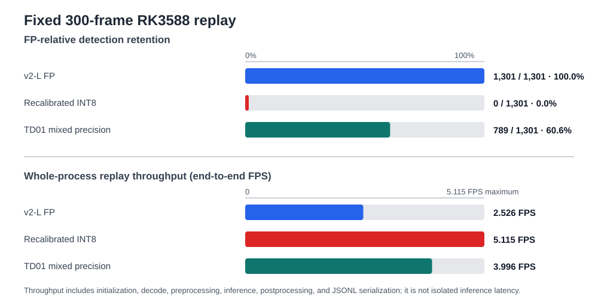
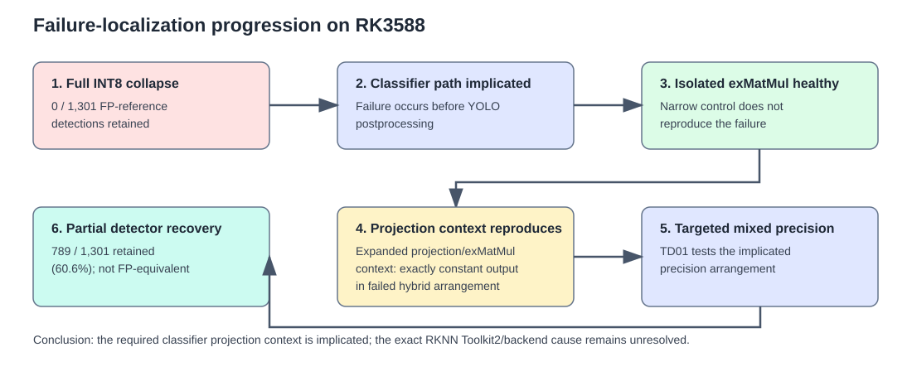

v2-L INT8 Quantization Failure Analysis¶
On the fixed 300-frame RK3588 replay, recalibrated and quantized v2-L INT8 retained 0 of 1,301 v2-L FP-reference detections. We created a mixed-precision hybrid model, TD01, which retained 789 of 1,301 (60.6%). The failure localizes to the classifier projection context on RK3588, but the exact RKNN Toolkit2/backend cause remains unresolved, and the RKNN compiler is proprietary.
The contrast that motivated the investigation¶
When run through frames corresponding to a reference scene, the quantized v2-L model's performance collapses completely, as shown in the left pane in the video below. The right pane shows our somewhat repaired TD01 model on the same reference scene.
What was evaluated¶
The canonical evaluation replays 300 frozen representative frames through the
existing vision_replay detector path on RK3588, with score
threshold 0.25, and NMS IoU threshold 0.45. We ran the same frames through v2-L FP, v2-L INT8, and our reconstructed hybrid precision model TD01.
Results¶
Detector-level result¶

| Model | Active frames | Detections | FP-reference detections retained | Whole-process replay throughput |
|---|---|---|---|---|
| v2-L FP | 300 | 1,301 | baseline (1,301 / 1,301) | 2.526 FPS |
| v2-L recalibrated INT8 | 0 | 0 | 0 / 1,301 (0.0%) | 5.115 FPS |
| v2-L TD01 mixed precision | 295 | 789 | 789 / 1,301 (60.6%) | 3.996 FPS |
The higher INT8 replay throughput does not offset its detector collapse.
Class-specific recovery¶
TD01 recovered some classes strongly while leaving others severely degraded. These are FP-relative agreement measures, not ground-truth precision or recall.
| Strongest TD01 retention | Retained | Weakest TD01 retention | Retained |
|---|---|---|---|
| person | 81 / 86 (94.2%) | cellphone | 0 / 5 (0.0%) |
| potted plant | 119 / 127 (93.7%) | handbag | 2 / 48 (4.2%) |
| tripod | 58 / 63 (92.1%) | bag | 4 / 59 (6.8%) |
| cup | 47 / 52 (90.4%) | book | 18 / 73 (24.7%) |
| garbage can | 120 / 137 (87.6%) | subwoofer | 7 / 27 (25.9%) |
| bottle | 66 / 79 (83.5%) | desk | 37 / 124 (29.8%) |
Failure localization¶

Full INT8 collapsed before YOLO postprocessing, implicating the classification path. The isolated exMatMul micrograph remained healthy. In contrast, the expanded lowered projection/exMatMul context reproduced the failed hybrid arrangement on RK3588 with exactly constant output; FP16 and healthy-hybrid controls remained non-constant. This localizes the failure to the required classifier projection context rather than an isolated matrix multiply. It does not identify the exact proprietary Toolkit2/backend mechanism.
Conceptually, TD01 is a targeted hybrid precision layout: it retains FP16 at the 80x80 classifier projection and text operand around the MatMul boundary, in addition to the validated FP16 classifier outputs, while the rest remains quantized. It was used to test the implicated precision arrangement, not to recreate FP behavior. The technical appendix records the layer-level conversion details.
Engineering decision¶
Recalibrated v2-L INT8 is unsuitable: it collapsed before post-processing in the final replay. TD01 is diagnostic evidence of partial recovery and localization, not an FP-equivalent or validated production replacement. v2-L FP remains the quality reference.
Evidence and reproducibility¶
This page is the canonical INT8 experiment narrative. The technical appendix records the conversion contract, host-analysis procedure, hashes, and artifact retention details that support it.
The compact retained evidence consists of the 300-frame summary and normalized JSONLs, model and command provenance, frozen-frame manifest, RK3588 projection-context metrics, replay provenance, and evidence inventory. For raw-artifact inspection, see the repository's 300-frame result bundle, frame manifest, projection-context metrics, and evidence inventory.
Limitations¶
This is a fixed 300-frame RK3588 comparison with recorded models, thresholds, and replay path. It is not ground-truth precision or recall, broad deployment validation, isolated latency measurement, or proof of a proprietary Toolkit2/backend root cause.